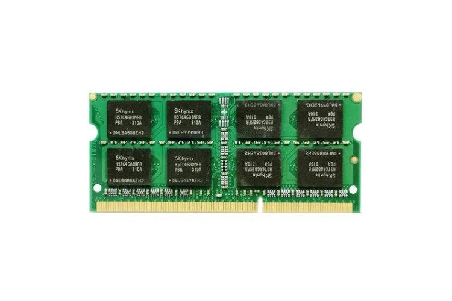
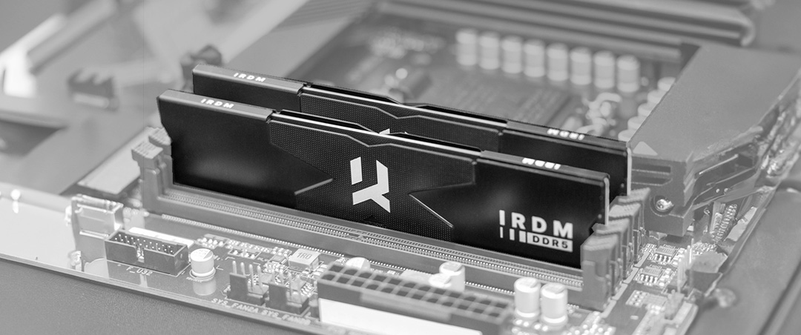
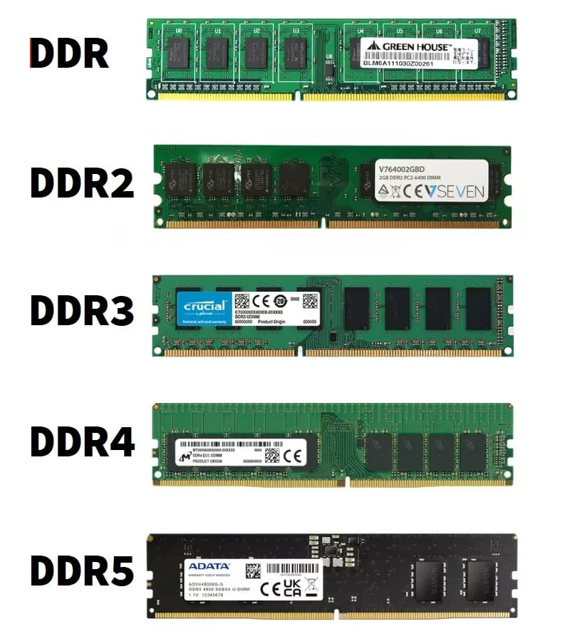
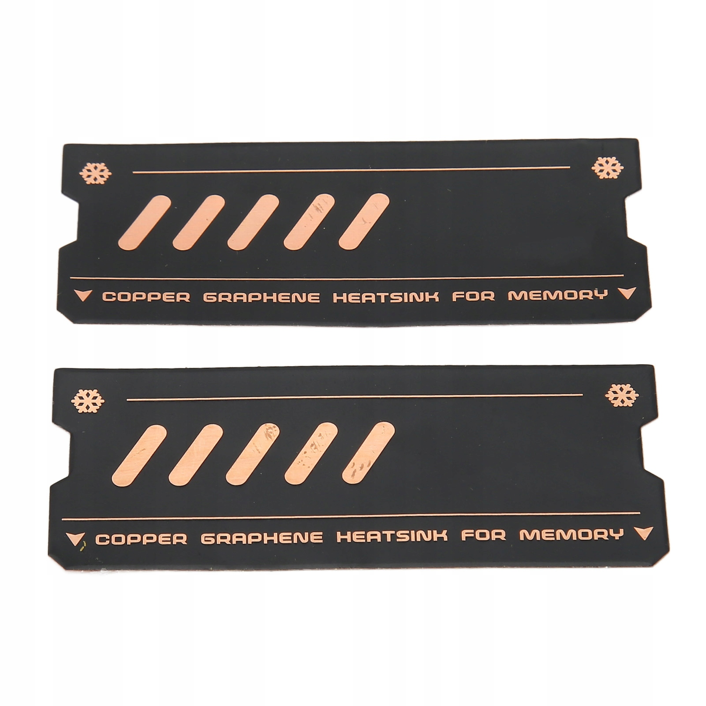
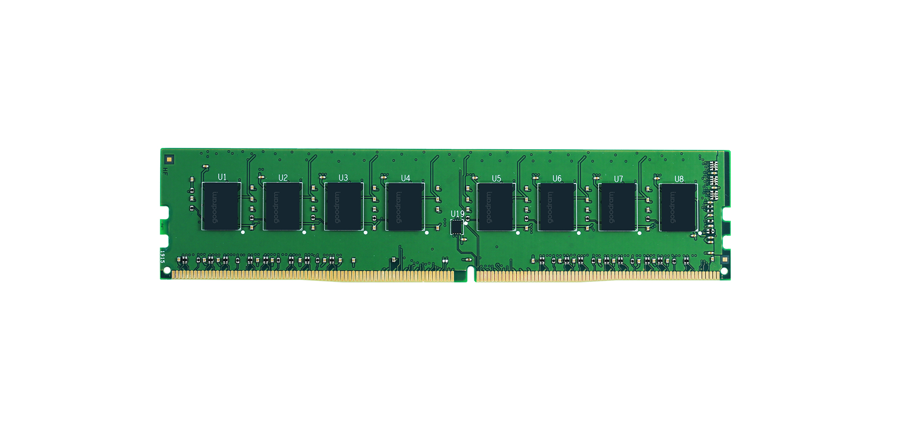
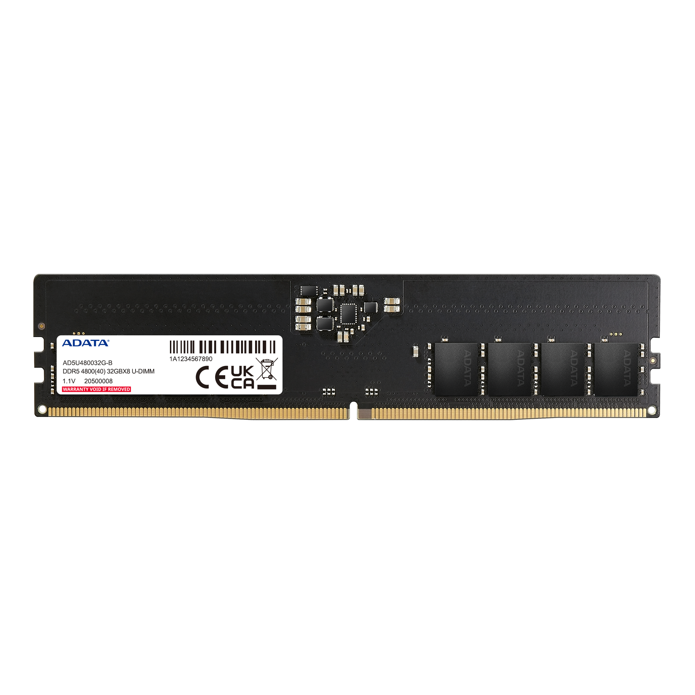

Pamięć RAM (Random Access Memory) to szybka pamięć operacyjna, w której komputer przechowuje dane i programy aktualnie wykorzystywane przez użytkownika. Jest pamięcią ulotną, co oznacza, że po wyłączeniu komputera jej zawartość zostaje usunięta.
Im większa pojemność RAM (np. 16 GB lub 32 GB), tym więcej wymagających aplikacji i kart w przeglądarce można uruchomić jednocześnie. Ma to duże znaczenie podczas grania, pracy z grafiką i korzystania z wielu programów.


DDR4 i DDR5 to standardy pamięci RAM. DDR5 jest nowszą generacją, oferującą większą przepustowość i lepszą efektywność energetyczną. Oba standardy różnią się budową i nie można ich zamiennie montować w tym samym slocie.
Taktowanie określa szybkość przesyłania danych przez pamięć, natomiast opóźnienie CL (CAS Latency) określa liczbę cykli zegara potrzebnych na rozpoczęcie odczytu danych.


DDR4 to starszy standard pamięci operacyjnej, który nadal jest wykorzystywany w wielu komputerach. Oferuje dobrą wydajność w codziennych zadaniach i grach komputerowych.

DDR5 to nowszy standard pamięci operacyjnej, który zapewnia większą przepustowość i możliwość osiągania wyższych częstotliwości pracy. Jest stosowany w nowoczesnych komputerach.

Kingston to jeden z najbardziej rozpoznawalnych producentów pamięci komputerowych. Firma oferuje moduły RAM do komputerów domowych, biurowych i gamingowych.
Corsair to producent podzespołów i akcesoriów komputerowych. Jego pamięci RAM są popularne szczególnie w komputerach gamingowych.